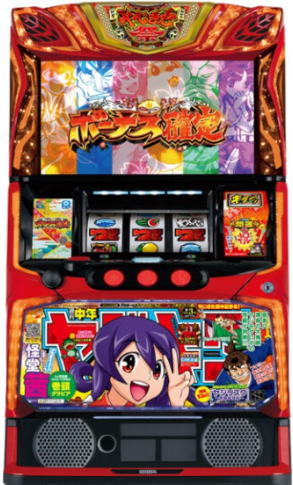

目次

スマスロ やじきた道中記参る！YAJIKITA DOUCHUKI MAIRU ｜ ユニバーサルブロス
「まいる」を貯めてCZ「関所チャレンジ」を目指すゲーム性。上位AT「超やじきた祭」は純増約5.0枚/G・ループ率70%で期待獲得3,000枚over。CZ確率・AT初当たりに大きな設定差があります。
スマスロ やじきた道中記参る！ スペック・機械割
| 設定 | CZ確率 | AT初当たり | 機械割 |
|---|---|---|---|
| 1 | 1/231.1 | 1/473.9 | 97.7% |
| 2 | 1/222.7 | 1/457.5 | 98.7% |
| 3 | 1/209.5 | 1/431.6 | 100.6% |
| 4 | 1/191.5 | 1/388.1 | 105.2% |
| 5 | 1/173.1 | 1/352.1 | 109.5% |
| 6 | 1/157.5 | 1/318.3 | 114.5% |
期待収支（交換レート別）
| 設定 | 機械割 | 差枚数/1h | 差枚数/3h | 差枚数/5h | 差枚数/8h |
|---|---|---|---|---|---|
| 1 | |||||
| 2 | |||||
| 3 | |||||
| 4 | |||||
| 5 | |||||
| 6 |
スマスロ やじきた道中記参る！ 小役確率
小役確率は現在調査中です。情報が確定次第、本ページにて更新いたします。
| 項目 | 数値 |
|---|---|
| コイン持ち | 約35.4G/50枚 |
スマスロ やじきた道中記参る！ 設定判別ポイント
- ① AT初当たり確率：設定1の1/473.9に対し設定6は1/318.3と約1.49倍の差。最も重要な判別指標です。
- ② CZ「関所チャレンジ」確率：設定1の1/231.1から設定6の1/157.5まで段階的に優遇。CZ出現頻度で設定の高低を推測できます。
- ③ CZ確率とAT初当たりの乖離：CZ確率が高いのにAT初当たりが伸びない場合はCZ突破率の下振れ。逆にAT初当たりが良好ならば高設定期待度が上がります。
CZ確率・AT初当たりの両方に設定差があるため、両指標を併せて追うことが設定判別の精度向上に繋がります。特にAT初当たりは設定1と設定6で約1.5倍の開きがあり、長時間稼働で差が顕著に現れます。
スマスロ やじきた道中記参る！ 天井・リセット
| 条件 | 天井 | 恩恵 |
|---|---|---|
| 通常天井 | 調査中 | 調査中 |
| 設定変更後 | 調査中 | 調査中 |
| 電源OFF→ON | 調査中 | — |
天井情報は現在調査中です。情報が確定次第、天井G数・恩恵・設定変更時の挙動を本ページにて更新いたします。
スマスロ やじきた道中記参る！ AT詳細
通常時のゲームフロー
| フロー | 内容 |
|---|---|
| 通常時 | 「まいる」を貯めてCZ「関所チャレンジ」を目指す |
| まいるチャージ | 特化ゾーン。一気に「まいる」を大量獲得できるチャンス |
| 関所チャレンジ（CZ） | 平均突破率約50%。突破でAT突入 |
AT性能
| AT種別 | 純増 | 特徴 |
|---|---|---|
| メインAT | 約2.5枚/G | 通常のAT。上位AT昇格のチャンスあり |
| 超やじきた祭（上位AT） | 約5.0枚/G | ループ率約70%・期待獲得3,000枚over |
| 項目 | 超やじきた祭 詳細 |
|---|---|
| 純増 | 約5.0枚/G |
| ループ率 | 約70% |
| 期待獲得枚数 | 3,000枚over |
上位AT「超やじきた祭」は純増約5.0枚/Gの高速消化とループ率約70%で大量出玉が期待できます。メインATからの昇格ルートを狙いましょう。
設定判別ツール
AT回数を入力してください。AT初当たり確率から各設定の出現しやすさをポアソン尤度で推定します。
スマスロ やじきた道中記参る！ よくある質問
スマスロ やじきた道中記参る！の設定6機械割は？
設定6の機械割は114.5%です。設定1が97.7%で、設定3（100.6%）から機械割100%を超えます。AT初当たり確率に大きな設定差があり、高設定ほどCZ・AT当選が優遇されます。
スマスロ やじきた道中記参る！の天井は何ゲームですか？
現在調査中です。情報が確定次第、本ページにて更新いたします。天井到達時の恩恵についても併せて掲載予定です。
スマスロ やじきた道中記参る！の設定判別で重要な指標は？
AT初当たり確率が最も重要な指標です。設定1の1/473.9に対し設定6は1/318.3と大きな差があります。CZ「関所チャレンジ」の当選率（設定1：1/231.1〜設定6：1/157.5）も併せて確認することで精度が向上します。
関所チャレンジとは何ですか？
関所チャレンジはAT突入のカギとなるCZ（チャンスゾーン）です。通常時に「まいる」を貯めることで突入し、平均突破率は約50%です。突破するとAT「やじきた祭」に当選します。
超やじきた祭の性能は？
超やじきた祭は上位ATで、純増約5.0枚/Gの高速消化が特徴です。ループ率約70%で継続し、期待獲得枚数は3,000枚overの大量出玉が見込めます。
スマスロ やじきた道中記参る！のコイン持ちは？
通常時のコイン持ちは約35.4G/50枚です。標準的なスマスロAT機と同程度のコイン持ちとなっています。
まいるチャージとは何ですか？
まいるチャージは通常時に突入する特化ゾーンで、一気に「まいる」を大量獲得できるチャンスです。まいるを効率よく貯めることで関所チャレンジへの到達が早まります。